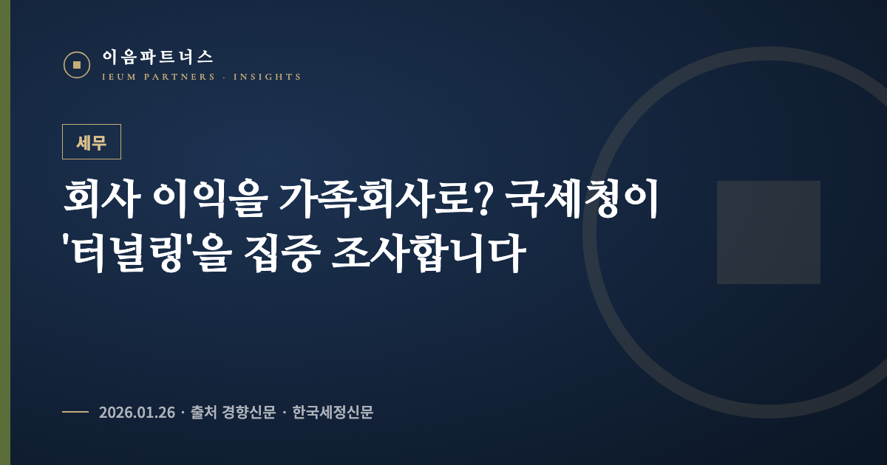

회사 이익을 가족회사로? 국세청이 '터널링'을 집중 조사합니다

국세청은 2026년 1월 26일 전국 세무관서장 회의에서 '2026년 국세행정 운영방안'을 발표하며 지배주주의 '터널링'을 집중 조사하겠다고 밝혔습니다. 상장사 이야기처럼 들리지만, 대표 가족이 지분을 가진 회사와 거래하는 법인이라면 함께 살펴볼 내용입니다. 이 글에서는 터널링이 무엇인지, 올해 국세청 조사 방향은 어떤지, 우리 회사가 무엇을 점검하면 좋은지 정리합니다.
운영방안은 한 해 세무조사의 큰 방향을 정하는 자료라 어떤 거래가 집중적으로 검증될지 가늠할 수 있습니다. 가족회사나 계열회사와 거래가 있다면 거래 조건을 미리 점검해 두는 것이 좋습니다. 우리 회사 거래 구조가 궁금하시다면 카카오톡 채널 이음파트너스로 편하게 물어보셔도 됩니다.
터널링이란 무엇인가
경향신문은 터널링을 “상장회사의 자산이나 이익을 지배주주의 가족회사 등으로 빼돌리는 행위”로 설명했습니다(경향신문). 일감 몰아주기와 계열사 부당 합병이 대표적인 유형이며, 과세 대상이 될 수 있습니다. 회사 안의 돈이 보이지 않는 통로로 다른 회사로 빠져나가 소액주주가 손해를 본다는 뜻입니다.
국세청은 허위 공시로 주가를 띄운 뒤 주식을 대량으로 팔아 차익을 챙기는 시세조종과 함께, 터널링을 공동성장을 훼손하는 행위로 보고 강력히 대응하겠다고 밝혔습니다(한국세정신문).
2026년 국세청 조사, 어디에 집중하나
| 구분 | 내용 |
|---|---|
| 조사 규모 | 예년 수준인 연 1만 4천 건 안팎, 경제 여건에 따라 유연하게 운영 |
| 4대 집중 분야 | 주가조작 등 공동성장 훼손, 민생침해 탈세, 온라인 신종 탈세, 부동산 탈세 |
| 부동산 | 강남4구·마용성 고가 아파트 증여 거래 전수 검증, 특수관계자 간 저가 양도·위장 매매 조사 |
| 역외탈세 | 수익성 높은 사업을 해외 관계사로 무상 이전하는 다국적 기업 등 |
| 지원 | 물가 안정에 기여한 소상공인, 수출 우수 중소기업, 스타트업 등은 정기 세무조사 최대 2년 유예 |
체납 관리도 강화됩니다. 국세청은 110조 원에 이르는 국세 체납을 거두기 위해 3월 국세체납관리단을 출범시키기로 했고, 중요 조세 소송의 대리인 수임료 한도를 5천만 원에서 최대 10억 원으로 높이기로 했습니다(경향신문).
비상장 회사도 살펴볼 점
발표의 초점은 상장사 지배주주이지만, 특수관계 회사에 시가와 다른 조건으로 일감이나 이익을 넘기는 거래는 회사 규모와 관계없이 세법상 문제가 될 수 있습니다. 8월 하반기 조사 방향에서도 일감 떼어주기 등으로 특수관계인에게 이익을 나눠 주고 증여세를 피하는 행위가 중점 조사 대상으로 꼽혔습니다(한국세정신문).
대표님이 지금 확인할 것
- 대표 가족이 지분을 가진 회사와 거래가 있다면, 거래 가격이 다른 거래처와 비슷한 수준인지
- 특수관계 회사에 넘긴 일감의 규모와 그렇게 정한 이유를 설명할 수 있는지
- 합병·분할·증자처럼 주주별 이익이 달라지는 거래를 계획 중이라면 미리 세무 검토를 받았는지
참고한 자료
- 국세청, 개미투자자 울리는 지배주주 '터널링' 단속 강화 — 경향신문 (2026.01.26)
- 2026년 국세청 세무조사 운영방향은? — 한국세정신문 (2026.01.26)
- 하반기 국세청이 세무조사 집중하는 6대 분야 — 한국세정신문 (2026.08.12)
가족회사와의 거래 조건을 점검해 보고 싶으시다면 카카오톡 채널 이음파트너스에서 함께 살펴보실 수 있습니다.
※ 이 글은 일반적인 정보 제공을 위한 것으로, 개별 사안은 세무사·노무사 등 전문가와 함께 확인하시기 바랍니다.